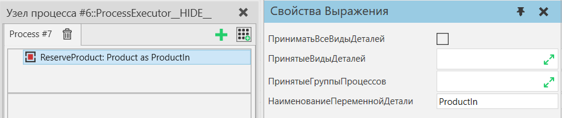

Зарезервировать продукт |
|
Оператор Зарезервировать продукт— это оператор о требовании, которое позволяет вам создать требование для доступности соответствующего продукта. Несколько таких резервирований могут использоваться в одном и том же процессе. Зарезервированный продукт может быть любым или отфильтрованным по типам продуктов или группам потоков. Оператор сохраняет экземпляр продукта в переменной, имя которой определяется НаименованиеПеременнойДетали. Зарезервировать деталь можно использовать для операторов Буфер , Транспорт В , Транспортировка Паттерна В , Начавть Транспортировку В .  Свойства
|